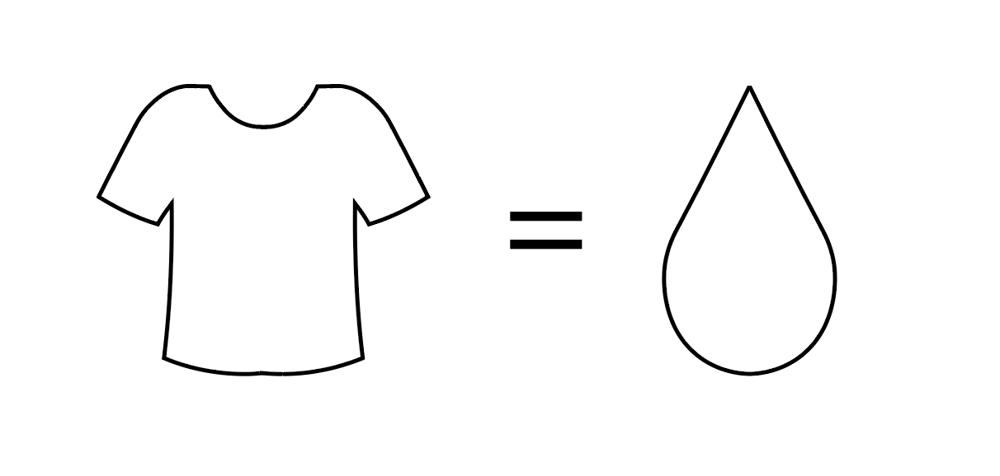

Tøjindustrien står for 10 % af verdens CO₂-udledning.
Lær hvordan du kan gøre en forskel.
Vi vil gerne gøre det nemt og overskueligt, at lære om tøjindustriens påvirkning på miljøet.
Vidste du f.eks. at...

1 t-shirt kræver 1400 liter vand at producere.
Pas på dit tøj

En af de nemmeste måder, at skåne miljøet på er, at bevare og passe på det tøj vi i forvejen har.
Vores tøj har nemlig meget længere levetid, end vi egentlig giver det.